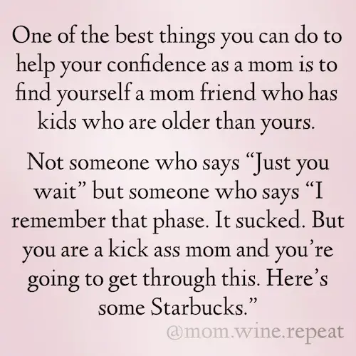

If you feel like today has been a shit show of a day and you desperately need to see some words of encouragement for moms, you’ve come to the right place.
If you feel like today has been a shit show of a day and you desperately need to see some words of encouragement for moms, you’ve come to the right place.
I only have one very curious and very energetic toddler and I find taking care of her tough enough!
Whenever I feel so drained, sometimes writing in a gratitude journal or just reading the right kind of encouragement for moms quotes, is enough to keep me going.
It’s also enough to make me feel guilty, ugly cry and make me hug my kid a little tighter, but I digress.
Here are some inspiring and encouraging quotes for moms, to lift you up, to keep things in perspective, to make you feel you’re not alone or just simple, to make you laugh, especially during the tough times.
“Parenting is one of the easiest things in the world to have an opinion about, but the hardest thing in the world to do.” – Matt Walsh
Whenever you feel like you are failing, look in the eyes of your child, and know your value. – Anonymous
“Sometimes the strength of motherhood is greater than natural laws.” – Barbara Kingsolver

You will never have this day with your children again. Tomorrow they’ll be a little older than they were today. This day is a gift. Just breathe, notice, study their faces and little feet. Pay attention. Relish the charms of the present. Enjoy today, it will be over before you know it.” – Jen Hatmaker
“I think moms, single or not, put a lot of pressure on ourselves trying to balance it all. It’s NEVER going to be perfectly balanced—the sooner you know this, the sooner you can relieve some of the pressure you put on yourself.” – Denise Richards


“A stay-at-home mom is a working mom. Being a stay-at-home mom is a job.” – Cobie Smulders
“There is no way to be a perfect mother, and a million ways to be a good one.” – Jill Churchill

Words of Encouragement for Moms
All the encouraging quotes for moms above (except for the funny ones) can be summed up into these key takeaways:
1.You are doing a good job.
If you are doubting yourself if you’re a good mother, you already are. You don’t need to be the do-it-all-become-it-all-you-can-have-it-all mom. They don’t exist and all mothers are struggling one way or another. As long as your child feels loved and safe, you’re already doing a great job.
2.You are not alone.
If at some point you felt alone, hated parenting, you want someone to take care of your kids, reminisce about single life again, or even regret having children, don’t feel so bad. Even the best moms out there, with the best and purest of intentions have felt that way at some point. And if you feel lonely, isolated, depressed – we all felt the same way too. There are phases in motherhood that really just sucks and I find that one way to overcome those phases is to manage your expectations and to keep things at perspective. And to be aware that, you are not alone in what you’re feeling – all mothers felt the same way that you do.
3.This too shall pass.
Nothing lasts forever. Your kid will go through different milestones and phases that are hard and will be hard and you’ll wish that it’ll be over soon. You will feel all sorts of emotions that will make you feel like you’re in an emotional rollercoaster. It will be physically, mentally and emotionally draining. Drink your coffee and hang in there mamas.
4.Be kind to yourself.
You’re not a bad mom if you don’t feed your kids vegetables everyday. You’re not a bad mom if you don’t play with your kids everyday. You’re not a bad mom if you need to work and you let someone else take care of your baby the whole day. You’re a mom and we all do our best with the situation we are in. So speak kindly of yourself. Do you have any other favourite quotes or inspiring words of encouragement for moms? Do share them by commenting below!